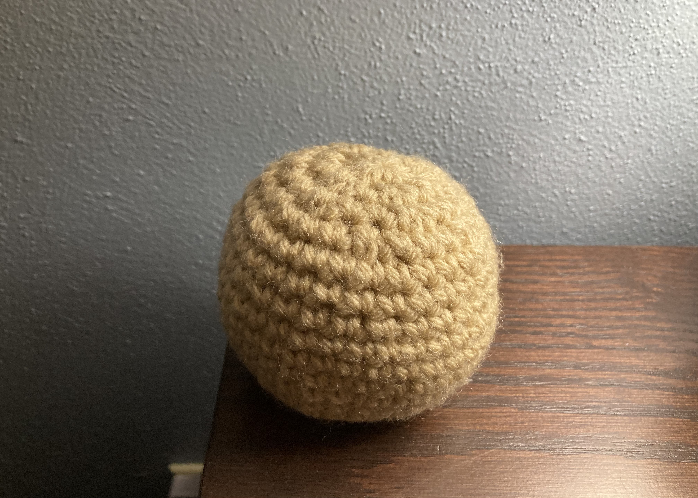
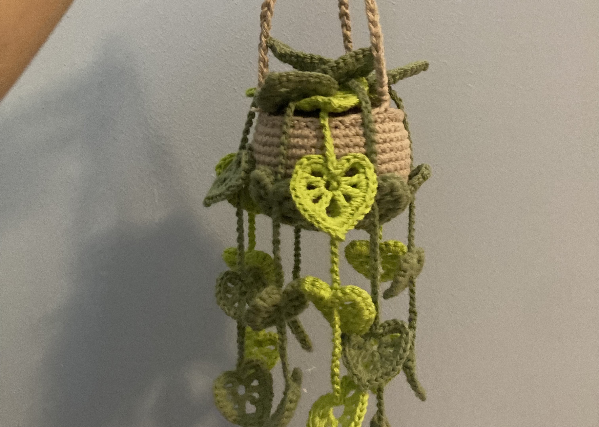
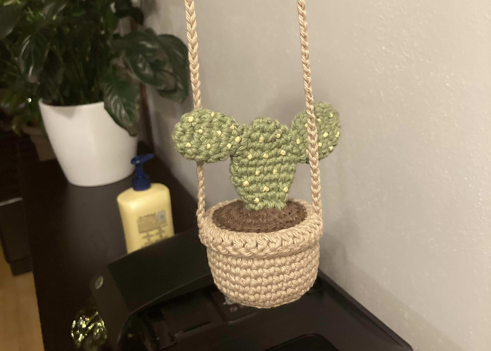
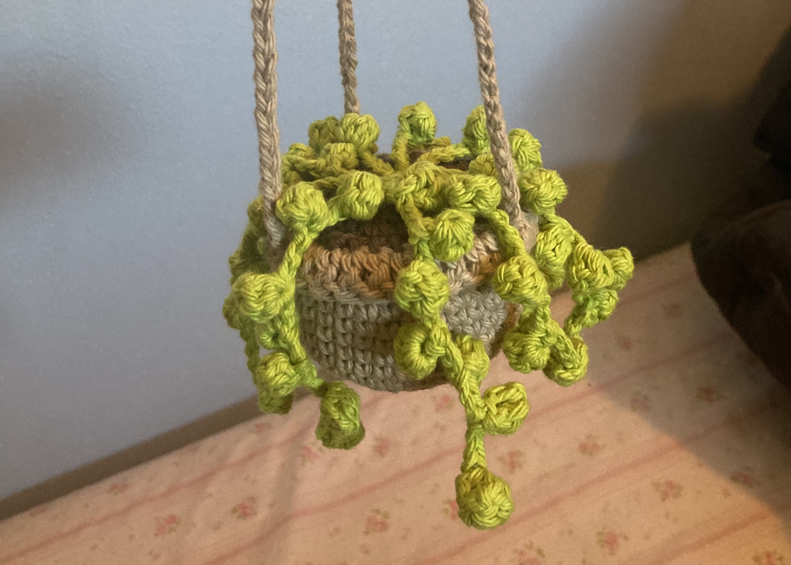

Crocheting is a fairly new hobby of mine; I only started crocheting last summer. My main motivation for learning crochet was to learn amigurumi to make cute plushies. I remember that the learning curve was quite big in the beginning, however with practice it became easier. The main things I have been crocheting so far are plants, specifically hanging plants for car decoration. Below you can see some of the things I have made.
This project I did simply for practice and to learn the basics of amigurumi. 
This is the first hanging plant I made; it was for my friend as a birthday gift. 
This plant I made for my oldest brother's car. 
This plant I made for my second brother's car. 